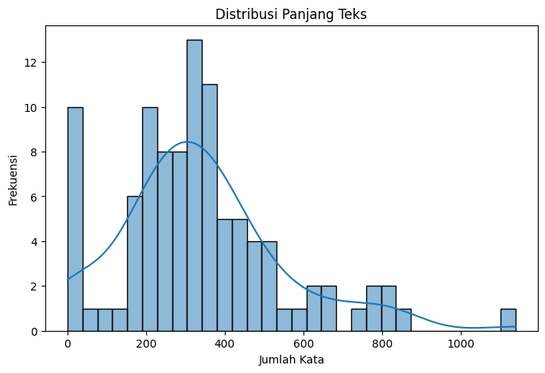
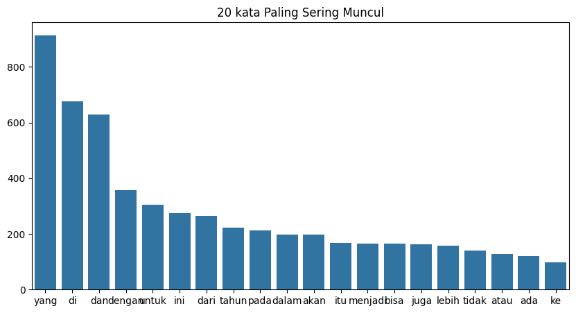
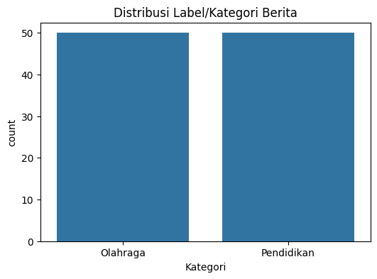

Tugas 2 | Crawling Berita#
Kode ini dibuat untuk melakukan web crawling berita dari situs Detik.com pada kategori Olahraga dan Pendidikan. Proses crawling dimulai dari tanggal 31 Desember 2024 dan berjalan mundur hingga jumlah berita yang diambil mencapai 100 berita. Dari setiap berita yang ditemukan, program mengambil judul, link, kategori, tanggal, dan isi berita. Seluruh hasil kemudian disimpan ke dalam file CSV sehingga dapat digunakan untuk analisis lebih lanjut.
berikut Code Crawling nya:
Crawling berita dari portal detik.com#
Import Library#
import requests
from bs4 import BeautifulSoup
import pandas as pd
from datetime import datetime, timedelta
Fungsi crawling#
Parameter:
limit : jumlah maksimum berita yang ingin diambil
tahun : tahun berita yang ingin dicrawl (default 2024)
Return:
DataFrame berisi judul, link, kategori, tanggal, dan isi berita
def crawl_detik(limit_per_kategori=50, tahun=2024):
# URL dasar berdasarkan kategori
base_urls = {
"Olahraga": "https://sport.detik.com/indeks",
"Pendidikan": "https://www.detik.com/edu/indeks"
}
hasil = [] # list untuk menyimpan hasil crawl
counter = {kategori: 0 for kategori in base_urls} # hitung per kategori
# header untuk menyamar sebagai browser
headers = {
"User-Agent": "Mozilla/5.0 (Windows NT 10.0; Win64; x64) "
"AppleWebKit/537.36 (KHTML, like Gecko) "
"Chrome/126.0.0.0 Safari/537.36"
}
# mulai dari tanggal 31 Desember tahun yang ditentukan
tgl = datetime(tahun, 12, 31)
# loop sampai semua kategori mencapai limit
while not all(c >= limit_per_kategori for c in counter.values()) and tgl.year == tahun:
tgl_str = tgl.strftime("%Y/%m/%d")
tgl_csv = tgl.strftime("%Y-%m-%d")
for kategori, base_url in base_urls.items():
if counter[kategori] >= limit_per_kategori:
continue # skip kalau kategori sudah cukup
url = f"{base_url}?date={tgl_str}"
print(f"🔎 Crawling {kategori} {tgl_str} -> {url}")
try:
r = requests.get(url, headers=headers, timeout=10)
r.raise_for_status()
soup = BeautifulSoup(r.text, "html.parser")
items = soup.find_all("article")
if not items:
continue
for item in items:
if counter[kategori] >= limit_per_kategori:
break
judul_tag = item.find("h3")
link_tag = item.find("a")
if judul_tag and link_tag:
judul = judul_tag.get_text(strip=True)
link = link_tag["href"]
isi = ""
try:
r2 = requests.get(link, headers=headers, timeout=10)
r2.raise_for_status()
soup2 = BeautifulSoup(r2.text, "html.parser")
content = soup2.find("div", class_="detail__body-text")
if content:
isi = " ".join([p.get_text(strip=True) for p in content.find_all("p")])
except Exception:
isi = "⚠️ Error ambil isi"
hasil.append({
"Judul Berita": judul,
"Link": link,
"Kategori": kategori,
"Tanggal": tgl_csv,
"Isi Berita": isi
})
counter[kategori] += 1
print(f"✅ Disimpan {kategori} ({counter[kategori]}): {judul}")
except Exception as e:
print(f"⚠️ Gagal membuka {url}: {e}")
tgl -= timedelta(days=1)
df = pd.DataFrame(hasil)
df["Tanggal"] = df["Tanggal"].astype(str)
return df
# Eksekusi utama
data = crawl_detik(limit_per_kategori=50, tahun=2024)
print("\nTotal berita berhasil dicrawl:", len(data))
print("Rincian per kategori:")
print(data["Kategori"].value_counts())
data.to_csv("detik_berita_2024.csv", index=False, encoding="utf-8-sig")
print("✅ Hasil disimpan ke detik_berita_2024.csv")
🔎 Crawling Olahraga 2024/12/31 -> https://sport.detik.com/indeks?date=2024/12/31
✅ Disimpan Olahraga (1): Marcus Gideon ke Ganda Pratama : Enggak Bisa Santai Kalau Mau Jago
✅ Disimpan Olahraga (2): Megawati Tampil Gemilang, Red Sparks Gebuk IBK Altos 3-0
✅ Disimpan Olahraga (3): Punya Tim & Semangat Baru, Jakarta Pertamina Enduro Siap Taklukkan Proliga
✅ Disimpan Olahraga (4): Jakarta Pertamina Enduro Tak Mau Lagi Cuma Gaspol di Awal Proliga
✅ Disimpan Olahraga (5): Ducati ke Honda: Bangun Motor Butuh Waktu, Tak Cuma Semalam
✅ Disimpan Olahraga (6): Herry IP ke Malaysia: Tinggal Tunggu Draf Kontrak
✅ Disimpan Olahraga (7): Tinggalkan Indonesia, Herry IP Pastikan Siap Latih Malaysia
🔎 Crawling Pendidikan 2024/12/31 -> https://www.detik.com/edu/indeks?date=2024/12/31
✅ Disimpan Pendidikan (1): 'UN' Sistem Baru Akan Diadakan Kemendikdasmen di 2026, Tulis Pendapatmu di POV!
✅ Disimpan Pendidikan (2): Penemuan Bangkai Paus Paling Langka di Dunia, Ilmuwan Ungkap Fakta Ini
✅ Disimpan Pendidikan (3): Kapan Perayaan Tahun Baru Pertama Kali Dirayakan? Sejak Ribuan Tahun Lalu!
✅ Disimpan Pendidikan (4): 4 Daerah Ini Larang Pesta Kembang Api pada Malam Tahun Baru 2025
✅ Disimpan Pendidikan (5): Mengenal Fenomena 'Doom Spending' di Kalangan Gen-Z dan Milenial
✅ Disimpan Pendidikan (6): Zonasi dan PPDB Selesai Dikaji, Diumumkan Usai Sidang Kabinet Bersama Presiden
✅ Disimpan Pendidikan (7): 30 Kata-kata Tahun Baru 2025, Bisa Dikirim ke Siapa Saja
✅ Disimpan Pendidikan (8): 2 Negara Ini Sudah Merayakan Tahun Baru Sore Ini, Kok Bisa?
✅ Disimpan Pendidikan (9): Wacana Sekolah Libur Sebulan Saat Ramadan, Mendikdasmen: Belum Jadi Keputusan
✅ Disimpan Pendidikan (10): Video Asesmen Kemendikdasmen 2023: Kemampuan Literasi-Numerasi Siswa Naik
✅ Disimpan Pendidikan (11): Video: Mendikdasmen Akan Umumkan Sistem UN Baru Setelah Idul Fitri
✅ Disimpan Pendidikan (12): Prediksi Cuaca Jelang Tahun Baru 2025, BMKG: Aman dari Cuaca Ekstrem
✅ Disimpan Pendidikan (13): Video Wacana Libur Sekolah Selama Ramadan, Ini Jawaban Mendikdasmen...
✅ Disimpan Pendidikan (14): Kurikulum Nasional Jadi Program Prioritas 2025 Kemendikdasmen, Mau Ganti Lagi?
✅ Disimpan Pendidikan (15): 10 Ide Resolusi Tahun Baru 2025 untuk Mahasiswa, Yuk Lakukan!
✅ Disimpan Pendidikan (16): Video: Mendikdasmen Sebut Angka Partisipasi Anak Sekolah Naik di 2024
✅ Disimpan Pendidikan (17): Mendikdasmen Bocorkan Sistem 'UN' Baru: Diumumkan Setelah Idul Fitri 2025
✅ Disimpan Pendidikan (18): Ini Cara Membuat SKTM untuk Daftar KIP Kuliah dengan Mudah
✅ Disimpan Pendidikan (19): Kenapa Tahun Baru Identik dengan Kembang Api? Ini Penjelasan Ahli
✅ Disimpan Pendidikan (20): 2024 Jadi Tahun Terpanas, Begini Prediksi Ilmuwan untuk Iklim 2025
🔎 Crawling Olahraga 2024/12/30 -> https://sport.detik.com/indeks?date=2024/12/30
✅ Disimpan Olahraga (8): Jorge Martin: Bagnaia-Marc Marquez Unggulan di MotoGP 2025
✅ Disimpan Olahraga (9): Thailand Masters 2025 Jadi Ajang Dejan Cs Hadapi Mantan Partner
✅ Disimpan Olahraga (10): 'Marquez Rider MotoGP Terbaik Sepanjang Masa bersama Rossi'
✅ Disimpan Olahraga (11): Jakarta Pertamina Enduro Ingin Ukir Sejarah di Proliga 2025
✅ Disimpan Olahraga (12): Jorge Martin: Gelar Juaraku dengan Pramac Akan Sulit Terulang
✅ Disimpan Olahraga (13): Tekad Wiempie Mahardi Cetak Penerus Gregoria Mariska Tunjung
✅ Disimpan Olahraga (14): Bahas MotoGP 2024, Bagnaia Sebut-sebut Aksi Marc Marquez 2019
🔎 Crawling Pendidikan 2024/12/30 -> https://www.detik.com/edu/indeks?date=2024/12/30
✅ Disimpan Pendidikan (21): Video: Mendikdasmen Beri Kode Ujian Nasional Digelar Setelah 2025
✅ Disimpan Pendidikan (22): Infografis: Keputusan Besar Dimulai dengan Tidur yang Nyenyak!
✅ Disimpan Pendidikan (23): Ini Kawah Terbesar yang Ada di Bulan, Diameternya Mencapai Ribuan Kilometer
✅ Disimpan Pendidikan (24): Begini Sains Menjelaskan Hantu, Bisa Dirasakan dan Dibayangkan
✅ Disimpan Pendidikan (25): Anak SMP Kelas 1 dari Vietnam Raih Skor IELTS 8,0 pada Tes Pertama
✅ Disimpan Pendidikan (26): Mengenal Brain Rot, Oxford Word of The Year 2024 yang Artinya Kebusukan Otak
✅ Disimpan Pendidikan (27): 3 Alasan Seseorang Sering Terbangun Jam 3 Pagi, Salah Satunya Terlalu Stres
✅ Disimpan Pendidikan (28): Apakah Selat Muria Akan Muncul Kembali? Begini Kata Pakar BRIN
✅ Disimpan Pendidikan (29): Ada Lowongan Kerja buat Lulusan SMA di PT Indofood, Cek Syaratnya!
✅ Disimpan Pendidikan (30): Anak Muda Masa Kini Lebih Tidak Bahagia dari yang Lebih Tua, Begini Solusinya
✅ Disimpan Pendidikan (31): Kemendikti Siap Hadirkan 40 SMA Unggulan Garuda, Lulus Dapat Beasiswa LPDP
✅ Disimpan Pendidikan (32): Jadwal Pengumuman CPNS 2024 hingga Penetapan NIP
✅ Disimpan Pendidikan (33): 6 Kecelakaan Pesawat karena Bird Strike, Terbaru Jeju Air
✅ Disimpan Pendidikan (34): Mendikdasmen Isyaratkan UN Akan Digelar Kembali 2026: Konsep Sudah Siap
✅ Disimpan Pendidikan (35): Bird Strike, Seberapa Bahaya pada Penerbangan Pesawat?
✅ Disimpan Pendidikan (36): Apa Itu PBI BPJS yang Dikaitkan dengan Harvey Moeis?
✅ Disimpan Pendidikan (37): Cara Cek Sertifikat PPPK 2024, Unduh di sertificat.bkn.go.id
✅ Disimpan Pendidikan (38): Jadwal Libur Panjang atau Long Weekend di Tahun 2025, Anak Sekolah Catat!
✅ Disimpan Pendidikan (39): Mengenal Metode SMART, Cara Membuat Resolusi Tahun Baru 2025 yang Anti Gagal
✅ Disimpan Pendidikan (40): Kapan Siswa Kembali Masuk Sekolah Usai Libur Nataru 2025? Cek Jadwalnya!
🔎 Crawling Olahraga 2024/12/29 -> https://sport.detik.com/indeks?date=2024/12/29
✅ Disimpan Olahraga (15): Pelatih Ungkap Problem Ganda Putra Pratama Usai Nyaris Sepekan Latihan
✅ Disimpan Olahraga (16): Jadwal BWF World Tour 2025 di Januari: Ada 4, Salah Satunya di Jakarta
✅ Disimpan Olahraga (17): Prediksi Juara Dunia MotoGP 2025 Menurut Wayne Gardner
✅ Disimpan Olahraga (18): Ini Skuad Jakarta Electric PLN yang Punya Target Tinggi di Proliga 2025
✅ Disimpan Olahraga (19): PBSI Tarik 3 Wakil RI dari Malaysia Open 2025, Kini Kirim 9 Wakil
✅ Disimpan Olahraga (20): Marini pada Bagnaia: Kalahkan Marquez, lalu Jadi Salah Satu GOAT
✅ Disimpan Olahraga (21): Marini: Sukses Bagnaia Menangi 11 Balapan Tak Akan Diingat
🔎 Crawling Pendidikan 2024/12/29 -> https://www.detik.com/edu/indeks?date=2024/12/29
✅ Disimpan Pendidikan (41): Ilmuwan Temukan Fosil Yana, Bayi Mammoth Utuh dari 50 Ribu Tahun Lalu
✅ Disimpan Pendidikan (42): 7 Fakta Tentang Lukisan di Gua Lascaux, Ceritakan Keadaan Prasejarah
✅ Disimpan Pendidikan (43): Pengalaman Marlina Melamar Kerja di Perusahaan Korsel, Lalui 3 Tahapan Ini
✅ Disimpan Pendidikan (44): 7 Spesies Hewan Ini Berhasil Selamat dari Era Kepunahan Dinosaurus, Apa Saja Ya?
✅ Disimpan Pendidikan (45): Beasiswa Guru 2025 ke Jepang, Cek MEXT Teacher Training Program di Sini!
✅ Disimpan Pendidikan (46): 4 Tips Kelola Stres Akhir Tahun Menurut Dosen Psikologi Unair, Coba Yuk!
✅ Disimpan Pendidikan (47): Semut Asal Brasil Ini Jadi Serangga Paling Gelap di Dunia, Mengapa?
✅ Disimpan Pendidikan (48): Soal PPG Guru Tertentu 2024, Kemendikdasmen: Lulus 98,59%-Selesai Maksimal 2026
✅ Disimpan Pendidikan (49): 7 Misteri Dunia yang Belum Terpecahkan, Atlantis hingga Makam Cleopatra
✅ Disimpan Pendidikan (50): Kuota Sekolah SNBP 2025 Diumumkan, Cek di snpmb.bppp.kemdikbud.go.id
🔎 Crawling Olahraga 2024/12/28 -> https://sport.detik.com/indeks?date=2024/12/28
✅ Disimpan Olahraga (22): Sosok Nenek 90 Tahun di Taiwan yang Ikut Lomba Angkat Beban
✅ Disimpan Olahraga (23): Tim Voli Putri Jakarta Livin' by Mandiri Siap Berlaga di Proliga 2025
✅ Disimpan Olahraga (24): Strategi MGPA Agar MotoGP Mandalika 2025 Lebih Ramai
🔎 Crawling Olahraga 2024/12/27 -> https://sport.detik.com/indeks?date=2024/12/27
✅ Disimpan Olahraga (25): 'Bagnaia Kini Tolok Ukur Pebalap di MotoGP'
🔎 Crawling Olahraga 2024/12/26 -> https://sport.detik.com/indeks?date=2024/12/26
✅ Disimpan Olahraga (26): Antonius Jadi Pelatih Ganda Putra, Ini Target Jangka Pendeknya
✅ Disimpan Olahraga (27): Herry IP Respons Kabar Diminati Asosiasi Bulutangkis Malaysia
✅ Disimpan Olahraga (28): Tim RI Juarai Turnamen Internasional Basket di China
✅ Disimpan Olahraga (29): India Open 2025 Jadi Momen Debut Dua Ganda Campuran Baru
🔎 Crawling Olahraga 2024/12/25 -> https://sport.detik.com/indeks?date=2024/12/25
✅ Disimpan Olahraga (30): Usai Indonesia Juara di Abu Dhabi, Pencak Silat Diharapkan Masuk Olimpiade
✅ Disimpan Olahraga (31): David Alonso Makin Kagumi Marc Marquez dan Valentino Rossi, karena...
✅ Disimpan Olahraga (32): David Alonso Patahkan Rekor Valentino Rossi, tapi Tidak Tinggi Hati
✅ Disimpan Olahraga (33): 3 Rider Ini Pacu Jorge Martin untuk Gas Pol Terus di 2024
🔎 Crawling Olahraga 2024/12/24 -> https://sport.detik.com/indeks?date=2024/12/24
✅ Disimpan Olahraga (34): Quartararo Puji Upaya Yamaha Untuk Bangkit
✅ Disimpan Olahraga (35): Atlet Horseback Archery Indonesia Rajai Liga Memanah Berkuda Malaysia
🔎 Crawling Olahraga 2024/12/23 -> https://sport.detik.com/indeks?date=2024/12/23
✅ Disimpan Olahraga (36): Chico Aura Batal Tampil di Malaysia Open 2025
✅ Disimpan Olahraga (37): Ducati Yakin Akan Rebut Gelar Juara Dunia MotoGP Lagi Musim Depan
✅ Disimpan Olahraga (38): Beragam Aksi Warga Nonton Kejuaraan Selancar Internasional di Hawaii
✅ Disimpan Olahraga (39): Video Rahasia Workout Nenek 90 Tahun di Taiwan yang Ikut Lomba Angkat Beban
✅ Disimpan Olahraga (40): Pelatih Pelatnas PBSI 2025 Rupanya Pilih Asistennya Sendiri
✅ Disimpan Olahraga (41): Sabar/Reza Unjuk Gigi Tahun Ini, kok Tidak Masuk Pelatnas PBSI?
✅ Disimpan Olahraga (42): Ini Alasan Dejan Ferdinansyah Masuk Skuad Pelatnas 2025
✅ Disimpan Olahraga (43): Juara Indonesia Pingpong League 2024 Bakal Dikirim ke Thailand
🔎 Crawling Olahraga 2024/12/22 -> https://sport.detik.com/indeks?date=2024/12/22
✅ Disimpan Olahraga (44): Soal Pemilihan Pelatih PBSI, Taufik Hidayat: Ini Sudah Terbaik
✅ Disimpan Olahraga (45): Marc Marquez Rasakan Tekanan di Ducati
✅ Disimpan Olahraga (46): Mulyo Handoyo Sebut Progres Tunggal Putra RI Sedikit Tertinggal
✅ Disimpan Olahraga (47): Bos Tim Balap Rossi Puji Marc Marquez
✅ Disimpan Olahraga (48): Dukungan Viktor Axelsen hingga Prannoy atas Curhatan Christian Adinata
✅ Disimpan Olahraga (49): Christian Adinata Curhat, Kecewa Usai Dicoret dari Pelatnas PBSI 2025
✅ Disimpan Olahraga (50): Usyk Menang Mutlak atas Fury, Pertahankan Gelar Kelas Berat!
Total berita berhasil dicrawl: 100
Rincian per kategori:
Kategori
Olahraga 50
Pendidikan 50
Name: count, dtype: int64
✅ Hasil disimpan ke detik_berita_2024.csv
EDA (Exploratory Data Analysis)#
Setelah mendapatkan dataset nya lalu kita lakukan EDA, Tujuannya supaya kita bisa paham dulu bentuk dan karakteristik data mentah hasil crawling sebelum masuk ke tahap preprocessing.
membaca dari dataset langsung agar tidak bergantung ke cell diatas “df”
Import Library#
import pandas as pd
import matplotlib.pyplot as plt
from collections import Counter
import seaborn as sns
Melakukan EDA#
Panggil dataset dari file nya langsung agar tidak bergantung cell diatas ‘df’
df = pd.read_csv("detik_berita_2024.csv")
Menampilkan beberapa baris awal dataset
print(df.head())
Judul Berita \
0 Marcus Gideon ke Ganda Pratama : Enggak Bisa S...
1 Megawati Tampil Gemilang, Red Sparks Gebuk IBK...
2 Punya Tim & Semangat Baru, Jakarta Pertamina E...
3 Jakarta Pertamina Enduro Tak Mau Lagi Cuma Gas...
4 Ducati ke Honda: Bangun Motor Butuh Waktu, Tak...
Link Kategori Tanggal \
0 https://sport.detik.com/raket/d-7712417/marcus... Olahraga 2024-12-31
1 https://sport.detik.com/sport-lain/d-7712305/m... Olahraga 2024-12-31
2 https://sport.detik.com/sport-lain/d-7712206/p... Olahraga 2024-12-31
3 https://sport.detik.com/sport-lain/d-7712029/j... Olahraga 2024-12-31
4 https://sport.detik.com/moto-gp/d-7711970/duca... Olahraga 2024-12-31
Isi Berita
0 Marcus Fernaldi Gideonhadir di PelatnasPBSI. K...
1 Megawati Hangestri PertiwimembawaRed Sparksmer...
2 Tahun ini, tim Pertamina Jakarta Pertamina End...
3 SetterJakarta Pertamina Enduro(JPE) Tisya Amal...
4 Ducatimemberi wanti-wanti keHondamenjelang mus...
info kolom dataset
print(df.info())
<class 'pandas.core.frame.DataFrame'>
RangeIndex: 100 entries, 0 to 99
Data columns (total 5 columns):
# Column Non-Null Count Dtype
--- ------ -------------- -----
0 Judul Berita 100 non-null object
1 Link 100 non-null object
2 Kategori 100 non-null object
3 Tanggal 100 non-null object
4 Isi Berita 96 non-null object
dtypes: object(5)
memory usage: 4.0+ KB
None
cek missig values
print(df.isnull().sum())
Judul Berita 0
Link 0
Kategori 0
Tanggal 0
Isi Berita 4
dtype: int64
Distribusi panjang teks (jumlah kata per berita)
df['text_length'] = df['Isi Berita'].apply(lambda x: len(str(x).split()))
plt.figure(figsize=(8,5))
sns.histplot(df['text_length'], bins=30, kde=True)
plt.title("Distribusi Panjang Teks")
plt.xlabel("Jumlah Kata")
plt.ylabel("Frekuensi")
plt.show()

Wordcloud
all_words = " ".join(df['Isi Berita'].astype(str)).split()
counter = Counter(all_words)
common_words = counter.most_common(20)
words, counts = zip(*common_words)
plt.figure(figsize=(10,5))
sns.barplot(x=list(words), y=list(counts))
plt.title("20 kata Paling Sering Muncul")
plt.show()

Distribusi kelas
if 'Kategori' in df.columns:
plt.figure(figsize=(6,4))
sns.countplot(x='Kategori', data=df)
plt.title("Distribusi Label/Kategori Berita")
plt.show()
